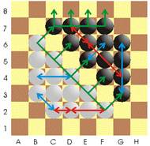
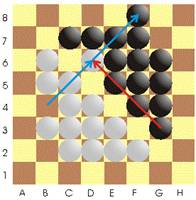

|
3.8. Горчаков О. Толкучка 2 стр шр. 10
Как
видно из названия, цель игры заключается в том, чтобы «вытолкнуть» шашки
противника за пределы доски.

Специфика игры в том, что игрок мыслит и ходит не отдельными шашками, а
целыми рядами. На диаграмме 1, показано первоначальное расположение шашек
и синими стрелками указаны различные варианты рядов, как ортогональных
так и диагональных. Стрелки указывают возможные варианты смещения рядов.
Ещё
одна особенность заключается в том, что, сдвигая ряд, мы можем
одновременно смещать ряд или шашку противника по тому же направлению. На
диаграмме 2 показан 1-й ход белых, обозначенный диагональной стрелкой.
Как мы видим, при этом и ряд черных тоже сместился к краю доски. Если
снова был ход белых, то, двигая ряд в том же направлении, мы столкнули бы
черную шашку с доски, что и требуется для победы. Движение своего ряда и
одновременное смещение шашек и рядов против ника считается за один ход.
Выигрывает
тот, кто столкнул все шашки противника, либо разбил ряды противника на
одиночные шашки, либо лишил возможности хода. В случаях, когда оба игрока
остались с параллельными рядами, или рядами не имеющими возможности
столкнуться – объявляется ничья.
Ряд
сдвигается так: последняя шашка ряда выставляется перед первой, на
свободное поле. Если поле занято шашкой противника, то шашка противника
«вышибается» по направлению удара, даже если ей придется перепрыгивает
через свой ряд, аналогичным образом занимая свободное поле.

Правила игры.
1.
Рядом считается любое количество шашек,
выстроенных в линию как по горизонтали и вертикали, так и по диагонали.
2.
Одиночные шашки, образовавшиеся в процессе игры,
снимаются с доски игроком, разбившем ряд.
3.
Нельзя ходить так, чтобы образовывались свои же
одиночные шашки. Армия должна быть всегда соединена.
4.
Ряд можно двигать только по его направлению, но
не перпендикулярно. На диаграмме 1, такие запрещенные ходы показаны
зеленым стрелками (только в настольном варианте).
5.
Нельзя смещать ряд или шашку противника, если за
этой шашкой или рядом, находится своя шашка или ряд. Например, нельзя
черным в ответ на ход белых B4-D6, как видно из диаграммы 2, сдвинуть
своим рядом G3-E5 белую шашку D6, так как за ней по этому же направлению,
стоит своя шашка C7. Запрещенный ход показан красной стрелкой.
6.
Нельзя делать в ответ встречный ход по тому же
направлению (например, черным ответить F8-D6). Этот ход можно сделать
только через раз. Это напоминает правило «ко» в Го.
7.
Правило 6 выполняется только, когда первым ходом
смещается шашка или ряд противника, но если враг лишь подступил вплотную,
можно отвечать встречным ходом.
8.
Одним ходом можно «разъединять» несколько шашек
противника. Все они снимаются с доски.
9.
Нельзя «делить» ряд на «подвалы», например ряд
из 4, на 2+2, или ряд из 5, на 2+3 и т.д. Такие запрещенные ряды
показаны на диаграмме 1 красным цветом.
|